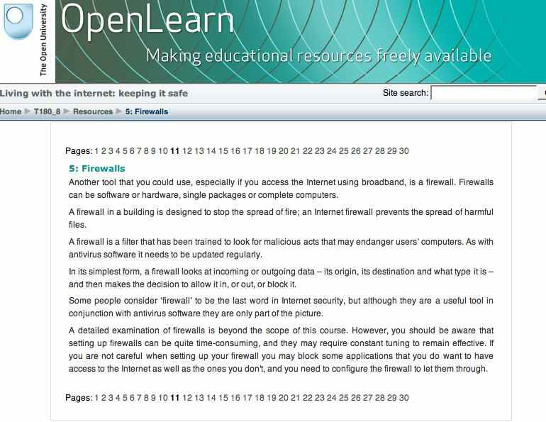
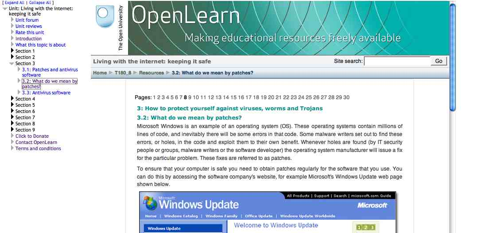
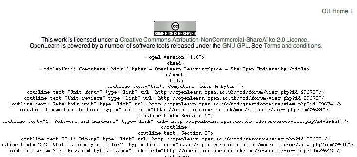
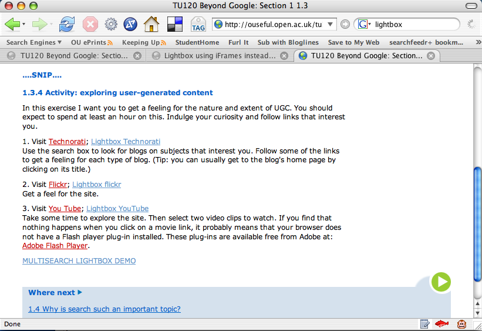
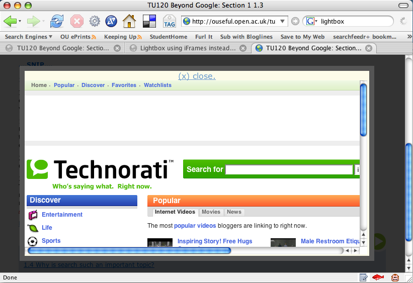

October 31, 2006
Stringle - Towards a String'n'Glue Learning Environment
How easy is it to pull together a presentational learning environment, I wondered to myself last week? Very easy it turns out, in part becasue of the way the web is turning into a huge logical Lego set via web services, embeddable page widgets and web feed wiring.
Take this quick'n'dirty attempt, for example, that demonstrates how pre-existing library related web feeds,RSS'ified OpenLearn content and 3rd arty widgets can be pulled together into an almost integrated environment in a dozen lines of HTML - I call it StrinGLE, for string'n'glue learning environment:

The environment has three panels:
- a sidebar navigation widget that feeds off an OPML file; when an actual HTML page web link is reached, it is opened in the main display area;
- a sidebar Widgetbox that can host one or more widgets - or as I see it, itinerant functionality (and content) from other web sites;-)
- a central main display area; in the screenshot above, I show a second embedded Grazr widget, this time displaying RSS'ified OpenLearn content, but it just as easily be a normal HTML page:

Note that this is very much a first attempt, that I had held off posting for a few days in the hope of adding a few more features - bookmarking buttons, one click feed subscription and so on, each of them no more than a half-hour hack (except searchfeedr integration, which may take a couple of hours...) - but spare half-hours are a scarce resource at the mo, so here's the very first Stringle as a placeholder and note to self to keep playing with this.
The second round of features should perhaps be integrated content editing tools, maybe something along the lines of Downes' RSS writr blogging tool.
Anyway, all to play for. All open source. All plug'n'play. All for free :-) Sort of....
October 26, 2006
OpenLearn Content via RSS?
One of the great thimgs about the OpenLearn project is that as well as making OU teaching materials available for free via the "OpenLearn VLE", the content can also be obtained in a raw, XML format via the partner LabSpace site.
Each OpenLearn 'course' has a corresponding course in LabSpace. LabSpace is the remix part of the project - users are encouraged to download content, rework it, develop it, maybe augment or remix it with their own content and as a result produce new chunks of learning material.
Most of the work that's being put into the LabSpace site at the moment has to do with developing tools to support collaboration - the MSG lite instant messenger , for example, 1-click Flashmeeting and Compendium.
Whilst these apps are all good stuff, my interests at the moment have far more to do with freeing up the flow of the content, and exploring appropriate tools and techniques for moving it around the web and maybe inclduing it in 3rd party sites.
So here's another taster of things I've been tinkering with during midnight hours - an RSS version of one of the OpenLearn courses displayed using Grazr:

You can download a copy of the XML from the course page in the LabSpace. I generated this RSS version of the material using this XSL stylesheet. Note that at the moment it does not transform all the elements defined in the schema used to define the structure of the XML formatted learning materials, and it contains a couple of hacks that tie it to a particular set of materials...
And just because, here's what it looks like in Netvibes... Firstly, just a list of the separate items:

And here, reading a particular item:

This sort of display raises quite a lot of issues regarding presentation, I think, that I need to go away and think about - and maybe post about later - in a lot more depth...
I wonder what sort of questions an embedded Grazr view raises...? Let's ask the question and see (to see this, you'll probably need to visit the actual web page that carries this post):

Enough for now...
October 25, 2006
Navigating OpenLearn Open Educational Content
So now it's officially live - OpenLearn launched today (read the press release) with several hundred hours of OU distance education teaching materials opened to the world under a Creative Commons Licence (Attribution-NonCommercial-ShareAlike 2.0 UK: England & Wales).
The material comes from current (or recently finished) OU courses across all subject areas - Arts and History, Business and Management, Education, Health and Lifestyle, IT and Computing, Mathematics and Statistics, Modern Languages, Science and Nature, Society, Study Skills, Technology.
(Just in passing, there is more OU related open content - this time released under the geo-restricted Creative Archive licence - on the Open2.net Creative Archive site.)
As well as making the content available, OpenLearn also provides community support through 'course' related forums, as well as several general forums, an approach that hasn;t really been adopted by the other OpenCourseware sites..
OpenLearn is built using Moodle, the open source learning environment that the OU has also adopted for use with our paying, course enrolled students, so the look and feel will be familiar to many.
There's lots to say about OpenLearn, not only relating to the thinking behind why the OU has taken up the open content challenge and how we might make it sustainable once the funding from The William and Flora Hewlett Foundation runs out(!), but also a tonne of stuff (?!) about the technology platform used to deliver the content.
Needless to say, I'll probably make a post or two ranting and raving about why the environment doesn't support this, or griping about the way that's implemented, but I'm really chuffed to see the site live and seeded with content (there's loads more to come, by the way...).
So, leaving all the good things that I could say unsaid (because hopefully that stuff will all be being posted elsewhere ;-), here's my first hack, an exploration of an alternative to the lousy in-course navigation:

The hack is to generate an OPML file of links from the course index page (such as ) and feed these into an Optimal OPML browser to provide a tree based naviagtional widget. You can try one out here;
Here's what it looks like:

To simplify matters, the following bookmarklet will redirect you to my OPML navigator wrapper for a course - if it exists - from a course index page on openlearn.open.ac.uk (e.g. you can try it out on the index page for Living with the internet: keeping it safe ): Redirect OpenLearn bookmarklet.
At the moment, I've only generated the OPML file for the following OpenLearn block index pages (id codes) **this part of the page is subject to change....**: Living with the internet: keeping it safe (1284), Computers: bits & bytes (1227)
[Update: it seems that the URLs for course index pages - and maybe the course pages - are not persistent. Or at least, they are subject to wild and dramatic change just at the moment... So the only guaranteed way of getting to a course page is to go to the OpenLearn front page, then find a link to the course you want either via a topic area or through searching. I've heard in another context how various people-who-decide-things in the OU believe that URLs should change to prevent people linking in... Gooooooooooooooooooooood move, folks. Not. I'll try and keep a live demo working here]
The OPML generating bookmarklet is far from optimal (it's built on top of an earlier pagelinks2opml bookmarklet - I really should have crafted a tidy one from scratch, because I suspect this version breaks in IE, though it runs in Firefox). In particular, the script is dodgy when it comes to getting the section grouping right if the sections or subsections aren't all numbered. I also need to escape out ampersands and other characters that upset the optimal XML parser...
If you want to give it a go, you need to apply it to a course index page - the OPML will be appended to the bottom of the page: OPMLify OpenLearn

If the section numbering is omitted, the script will not correctly create section folders, so you may have to repair the OPML by hand if: a) that's the case; and b) you want the section based navigation.
If you do generate an OPMl file for a course, tell me which and send me a link to it, and I'll add it to the pile. (Hmm, really should set up a wiki for this perhaps? or a delicious tag? how about usr:openlearnOPML? or perhaps these should all be colected in an OpenLearn forum....? hmmm...).
An Introduction to Social Networking
I ran a training session hour this morning on social networking, giving a very rapid overview of a lot of sites that people have heard about, but never seen, let alone used.
As ever, I asked who in the audience of 20 or so who used things like MySpace, flickr, youTube and so on (none, two and one respectively, I think..)
Whenever I do a presentation like this the first time, I'm unsure as to what exactly I want the take homes to be... (hmmm, what does that say about my preparation...?) Which is usually okay, because most presentations I put together end up being delivered two or three times, so I get to work on the things that came to mind during the first run through.
Anway, main take homes that ocurred to me that are not really covered in the presentation (which can be found, along with links, on this Social Networking Playlist) include:
- In terms of development, and presumably reflecting the evolution of a robust permissions structure, single/small team developer social sites frequently add functionality in the following order: public sharing, private (i.e. no) sharing, group sharing.
- Many social sites allow you to upload content, as long as you share it. If you want privacy, (and in particular, group privacy), you often have to pay for it (privacy is a privilege/paid for service, not a right...)
- Some sites limit the amount of content you can upload on a free account. Heavy users need to pay for additional storage.
- Many social sites grow virally - social networking (personal profile sharing) sites encourage users to invite their friends to join in the fun; collaborative content genearation sites require you to invite your collaborators to sign up in order that they can gain access to the document you want them to collaborate on.
One other thing I need to bring into the presentation, which was actually a point raised in the audience, was the question of how user behaviour is regulated on public, social sites, and the extent to which socially acceptable behaviour is enforced through architectural features, and/or self-policed by the community.
Certainly, sites that provide private groups allow for different norms (e.g. what may be acceptable in one closed group may be unacceptable in another, or in the public space).
And as to how those norms arise and are enforced/reinforced? Well, that's an interesting question, and one I think I need to explore in a lot more detail...
October 24, 2006
Is Google Custom Search OUseful?
Maybe...
Here are a few ways of using Google Custom Search that came immediately to my mind:
- For collecting links in a course team while a course is in production. We could do this with a social bookmarking tool, of course, but search is easier... and getting new domains into the search engine is just a case of bookmarking them, really...
- For providing a course search engine, in which all the external links mentioned in a course (particularly online courses) are used to prioritise results in an otherwise general Google search;
- As a place for students to contribute useful links to a course specific search engine. This might include links to tutorials and additional material discovered by the students.
Bootstrapping Google Custom Search Engines with searchfeedr
Google have just announced their Custom Search Engine rival to Yahoo's search builder and Windows Live Macros.
I've just had a quick play, and it's got far more going for it than I first realised.
The basic customisation lets you define the domains over which you want to limit search to, or prioritise search over. You can add up to a couple of thousand (I think) domains to your search engine, which puts the 15 or so that searchfeedr limits you to (and Rollyo doesn't offer many more) to some sort of shame... except when you consider that searchers rarely go beyond the first page of search results anyway...
Links can be added individually, or via a bookmarklet, by he custom search engine owner or their volunteers. Volunteers may be invitees only (Google going viral withthe marketing once again...), or the search engine can be open for anyone to submit links to.
Domains can also be excluded from the search engine (handy if you are using submitted domains for prioritised results in a general web search). Various filters can also be applied to URLs that are allowed as results, though I haven't tried this feature out yet.
Something else I haven't had time to try out yet are 'refinements':
Refinements are labels that you apply to web sites. They appear as a list of links above search results, offering users a way to narrow their search. When a user clicks a refinement label, the sites that you have labeled are given priority in the results. In addition to labeling sites, you can also specify additional words that are added to users' queries when they click a label, providing even more targeted results.
The look and feel of your custom search engine can be tweaked in several ways, including adding your own logo to the search box on the Google search results page. Your custom search engine can also be monetised (don't you just hate that word) using your AdSense account details.
One thing tht particulalry caught my eye were the bulk upload and XML configuration options. Adding links to your search engine one at a time can be rather painful, so google have provided the facility to upload links contianed in an OPML file. The example they give is of a Bloglines OPML (blogroll export) file. I assume this is a sideswipe at the relatively new 'search over my blogs' option that Bloglines started to provide via Ask.com...
Now a major constraint that searchfeedr has is the limited number of domains that you can limit a search over. However, by quickly adding a 'generate OPML' option that will generate a full* list of domains than a list artificially limited to 15 entries I can very quickly seed a more comprehensive Google Custom Search Engine:

*Err, that's not quite true, I limit the numer of links pulled down from delicious during a deliSearch.
Anyway, I posted the OPML generation extension to the searchfeedr interface, so if anyone uses to seed a Google Custom Search Engine with any degree of success or failure, please let me know :-)
October 21, 2006
Does VLE=Vertical Learning Environment?
A Technology Guardian article a week or so ago had an interesting article ("Joined-up experiences") on horizontal vs. vertical integration in consumer entertainment technology.
A couple of things in particular resonated with some of the muddled thoughts I've been having about personal learning environments (PLEs).
For example: "vertical integration of online store, PC and portable player" got me thinking about monolithic VLEs (vertical learning environments?), all-in-one managed solutions for taking the choice away from students in the tools they use/environments they are provided with - or at least, encouraged to use under threat of no technical support otherwise, by their educational institution.
The alternative is so-called horizontal integration. For example, in Microsoft's rival Plays For Sure music system, users have a wide choice of MP3 players from different manufacturers, and a wide choice of online music stores, with Microsoft's PC-based Windows Media Player in between. Devices and music services are supposed to be interchangeable, but all must support Microsoft's digital rights management (DRM) if they want to copy-protect songs. However, this is openly licensed: anyone can play.
Hmm - so that's like a PLE as ad hoc learning environment, then, where users can use whatever tools they like as long as they conform to standard protocols and file formats (email, RSS/web feeds, word processor document formats, and so on).
Many of us have seen it all before. Data processing was like this from the start and the ultimate master of vertical integration was IBM. It did the research, designed and built the hardware, software and networking, told you what you needed, trained your staff and did the maintenance.
...
These integrated systems suited customers who did not know much about computing. However, they soon discovered the catch: once you had bought a system, it was hard or perhaps impossible to switch to a different supplier.
...
Soon, most of the big vertically integrated computer suppliers disappeared, to be replaced by big parts suppliers ... . Competition removed much of the vendor lock-in and brought prices crashing down.
Unfortunately, it also meant that if system suppliers were no longer doing the vertical integration, customers had to do it themselves. In effect, they had to assemble their own systems from parts that might never have been tested together. No wonder the result often resembled Frankenstein's monster.
So what's the trend in education?
In the horizontal approach, it is likely that the students will be largely responsible for personalising their own learning environment at quite a fundametal level (i.e. the technologicial level that underpins - or mediates - their online interactions). However, the perceived need to offer student technical support (or maybe the fear of losing control...?) means that Your University Academic Computing Service are likely to favour the VLE approach:
Vertical integration may now be making a comeback because consumers are facing the problems businesses faced before: integrating a wide array of products that they barely understand.
There is another reason why 'verticalisation' may be coming back into favour in the consumer technology sector. Towards the end of thre Guardian article, technology consultant Geoffrey Moore is quoted as saying:
"In the old vertical model, the goal was to maximise wallet share of customer by building everything yourself to a proprietary standard. However, if any part of your value chain misfired, you could not ship the system. This happened more and more as markets began to grow at very fast rates. By shifting to the horizontal model, customers could fulfil their demand via many more swappable elements, which in turn led to better overall systems availability. Today that ride is largely over and 'verticalisation' is coming back into vogue, but for a different reason. We are now in a consumer model where the razor/razor-blade effect dominates. If you do not design the razor, you do not get to sell your blade. Additionally, end-to-end design accountability creates better consumer experiences (witness Apple with iPod, iTunes, Apple stores, proprietary Macintoshes), and these - not price/performance advances - are becoming the determining factor in buying decisions."
I don't think this has a correlate (yet?) in education. However, if educational instiutions start to make a strong play for lifetime relationships with their students, and move towards lifelong learning products , it may do so.
For example, imagine an institution that provided students with 'after-care' services (course updates, keeping current/current awareness top-ups), lifelong up-selling of courses (you did XYZ 101, now how about 202, 303, ..., 808, or XYZ101R, etc.), or cross-selling of courses ('people who studied this also studied that'), there are opportuinities for locking students in to another sort of vertical market - that of lifelong professional development/educational updating.
PS Juliette White was thinking about personalisation too, last week, and appears not to be altogether convinced:
The thing that I find that is all to often forgotten is that personalisation is generally a means to an end rather than an end in itself. It can sometimes be a very powerful means of course and sometimes the end can of course be personalised too, but generally in education what we're generally trying to do is help people learn things that enhance their life or other people's lives in some way (and I know it's not very idealistic to admit it, but maybe we're sometimes also trying to do this in a reasonably cost-effective way).
That post actually follows on from a couple of related, earlier posts. One reconsidering the benefits of Small pieces, loosely joined, which looks at the very real, practical difficulties involved with gluing small pieces together when you want to provide anything like an integrated experience at the tools level ("Nobody has yet really managed to make a generic way of making tools work in pretty much any VLE"), as opposed to content syndication level ("I guess you can do the "small pieces loosely joined" thing if all you are doing is accessing data that's publicly available (RSS is great as are thing like the Google APIs), or if you're happy for things really not to be joined at all.") And an much earlier post (that I have yet to pick up on....) thinking around the topic of Where should your students blog?.
With OpenLearn going live any day now, it will be interesting to see what sort of community devleops around it, and whether networks establish themselves around the content using third party tools, or whether they opt to take up the community support provided within the OpenLearn environment itself.
searchfeedr Roundup - Save Your Searches on delicious
I've had this feature on the go for a week now, and there are still a few tweaks that need to be made, but I thought I'd post a quick screenshot to show how you can save, and pull in, saved searchfeedr searches and search profiles:

Whenever you make a search, you are provided with a link to save the current search on delicious. This may be a a link to the full search, or - of you omit a search query term in the right hand search box- a link to a search profile (for example, a search over the links in a particular delicious feed).
If you tag your search with the tag usr:searchfeedr, you can pull it into the save searches ("My Search Feeds") panel on the right hand side. To pull saved searches into this panel, enter your delicous user name, maybe with a tag or two to focus the saved search selection further. (In the example above, I am displaying searches from by delicious user account ('psychemedia'); I could narrow the listed saved searches by adding a tag, for example "psychemedia/ocw" to display just the saved searchfeedr searches that are tagged as 'ocw'.
When you click on the 'My Search Feeds' button, a cookie is saved containing that delicious user (or user/tag) information, so those search feeds will be loaded in automatically necxt time you return to the searchfeedr site with the same browser.
The 'Link to this query' option is a link to to the current searchfeedr page (including the search engine settings, search feed, query and 'search over' type). The 'Search URL' link is a link directly to the search engine results page for the current search using the selected search engine.
Results from any domain can be suppressed by checking the corresponding checkbox in the 'Domains (tick to remove from results)' area.
Finally, searchfeedr ESP is switched on by default. To switch it off - and gain access to linkSearch and relatedSearch - just click on the ESP link. Click on it again to switch ESP mode back on.
Enough for now... OpenLearn launches next week and there are a few things related to that I want to play with...
October 19, 2006
Generic Library Traveller
Just dusted off some of the Library Traveller code (the Greasemonkey script that adds a floating panel over a page when there's something that looks like an ISBN in the URL, and provides links to your local library, a citation generator, Google books etc. for that book) and tried to make it a little more generic.
The script is still tied to a particular library catalogue, but I've tried to make it easier to customise by "borrowing" some code from Jon Udell's Library Lookup bookmarklet generator.
All the user has to do to customise the script is provide three pieces of information:
- the web domain for their library catalogue,;
- the library's name (actually, this could be dropped too);
- the type of library catalogue system that is running.
For example, here is the configuration information for the Open University Library Catalogue:
// ONE Your library name here
var libraryName='The Open University Library';
// TWO Your library catalogue web domain here
var libCatRoot = 'http://voyager.open.ac.uk';
// THREE Your library catalogue type
var libCatType='voyager';/
and here is the configuration information for the Keene Public Library:
// ONE Your library name here
var libraryName='Keene Public Library';
// TWO Your library catalogue web domain here
var libCatRoot = 'http://ksclib.keene.edu';
// THREE Your library catalogue type
var libCatType='innovative';
The script will only tell you if the book is held (i.e. on the records of) the library - at the moment all other library reporting (availability, when the book is due back if it's out on loan etc.) has been removed.
This is because: a) I want the script to be as generic as possible; and b) I want the user to have as little to do as possible when configuring the script.
The 'book is held' information uses the heuristic that, if the catalogue page that is returned from an ISBN lookup contains the first 20 characters of the title of that book, it's held by the library.

You can get hold of the script here: Generic Library Traveller script.
Comments, issues, successes, failures getting the script to work etc. much appreciated...
October 18, 2006
Microsoft Live Search and Domain Based Search Hubs
The graphic contained in this post on the Live Search LinkFromDomain operator suggests it all:
Green: LinkDomain:YourSite.com Yellow: LinkFromDomain:YourSite.com Blue: Either LinkDomain or LinkFromDomain Green + Yellow + Blue: LinkFromDomain:YourSite.com | LinkDomain:YourSite.com
You can try the terms out using this demo app.
I have to admit that when tinkering with linkSearch (search across pages or domains that link to a given URL), pageSearch (search across pages or domains that link from a given URL) and relatedSearch (search across pages or domains that are related to a given URL) my focus was on building search hubs around pages rather than domains, but these new toys from Microsoft Live may mean I need to rethink a little and try to support both?
I had been thinking about merging results from inlinks, outlinks and related links in a combined urlHubSearch tool, but the demo of macros showing links from one domain into another has got me thinking of all sorts of weird and wonderful potential search combinations...
And whilst following the various threads around the linkfromdomain operator, I also came across this quite old post on searching sites linked to from a blog. I'm still not totally clear how this service works, or what exactly it searches over, but the code is provided (using the Google SOAP search interface, no less), so I'll have to have a dig around inside it and see what's going on.
Maybe this will provide the incentive I need to move searchfeedr over to a web service driven interface, as well as the iframe/embedded original results page approach I use at the moment. (Although I do have a couple of demo apps that use the Yahoo Search API e.g. this flavour of deliSearch and this version of linkSearch - knock "ajax" off the latter URL and it reverts to the iframe results page)).
Adding domain or page based search hubs will undoubtedly complicate the integrated searchfeedr interface though, just when I thought I was starting to find a way of simplifying it :-(
Ho hum...
While on the topic of search, a couple of pointers to some new (ish, to me) search interfaces.
Clusty released a cloud view over their clustered results a week or two ago: Clusty Cloud Creator.
And the rather neat 'page preview in an iframe' interface for a selected result at snap.com seemed eminently sensible when I put it in the context of my Google Analytics results for this blog homepage - the majoirty of visitors coming in from Google leave within 10 seconds, presumably because the site is not what they were looking for.
And almost finally - one to watch, maybe: Google's experimental searchmash site. At the moment, as well as page links in one column, you get image based results in a smaller, right hand column. In addition, you can drog and drop the text results, possibly presaging some interface in which the users can help poor old Google out in improving its rankings (speaking of which - here's a simplified(?) take on how the ranking equation might work).
Windows Live Search OPML Generator doesn't go for drag and drop - though it could; this tool lets you search over feeds, then tick the ones you like and roll them into an OPML file.
Nifty, very nifty - and obvious, now someone's done it....
Wish I'd thought of it when I was playing with the OPML Feedrolled Persistent Federated Search and Social Bookmarking OPML Feed Roller tools.
Ho hum... with Live Macros looking like they could do all and more I wanted from searchfeedr, I'm going to need another trifle to play with...
Now I wonder, the OpenLearn open content project has its public launch next week...maybe there'll be some opportunities to tinker around that for a while ;-)
Portable OU
Are these the first signs of a changing attitude towards protable media, I wonder? At least two courses I know of now provide students with portable devices as part of the supplied course materials: TU120 Beyond Google sends out a 256Mb MP3 player to students at the start of the course, and the T885 Team Engineering students leave the weekend residential school at the start of their course with a 256Mb USB memory stick (and a webcam, too...).
The devices are OU branded, as these photos of the USB memory stick and the MP3 player show (I'll add a pic of the T885 memory stick to this post as soon as I get one):


The T885 memory stick is not preloaded with anything, although I believe students do load photos onto it during the residential school, that they must take away and then share somehow. T885 is exploring all sorts of social software tools - blogs, wikis, maybe even flickr?, and I hope to post more about it in the coming weeks...
The TU120 MP3 player does comes preloaded with some audio files recorded by the course team and used within the course. As such, the player is used to deliver content to students, as well as providing them with a portable - and standalone - means of consuming it.
However, the TU120 MP3 player is not preloaded with any software (though it could be...) although the mailing the player is sent out with does contain the OU Online Applications CD (which I've mentioned several times previously).
As I have the current CD handy, here are a few screenshot from the installer to show what's on it:


As far as I know, the Firefox installation is a vanilla one - i.e. I don't think there are any OU customisations applied to it.
I've been thinking for some time about what Firefox customisations we might usefully provide, either as extensions, or preloaded into an OU distributed Firefox installation package and I hope to post some demos relating to that topic in the next 2 to 3 weeks...
October 14, 2006
searchfeedr Does ESP...
I was determined to lay off searchfeedr for a while, but couldn't resist doing this half hour hack - an attempt at ESP... by which I mean, rather than requiring the user to select the sort of input that provides the search limits (delicious feed, web feed, or page feed, for example), the interface tries to guess what sort of search limit input is provided.
Here's the demo: searchfeedr ESP interface

(I know, I know, I said no more URLs and I'd stick with labs - but this removes the search limit input selection buttons, though I suppose I could add them back in to allow the user to over-ride a mistaken guess about the limit input type.)
At the moment, the system guesses at the following:
- things that look like somethingHere/somethingThere end up as the limit source for a deliSearch;
- things that have /rss/ in the URL path, or end with rss or xml are used as the limit source for a feedSearch;
- everything else is a pageSearch (i.e. it gets scraped for HMTL links...)
There are a couple of downsides - one is that I have removed the linkSearch and relatedSearch options (but I have an idea for how to combine them with pageSearch, which I'll try out in a week or two, maybe). The other - as hinted at above - is that the user has no say in over-rding a bad guess by the system - which means that some input limits may be broken...
I also fixed the handling of delicious popular tag feeds. These aren't available as JSON, so the deliSearch optimisation didn't work with them, but now I trap for "popular" and treat it as feedSearch instead by using the RSS feed rather than trying to consume the non-existent JSON feed.
Anyway, have a tinker and let me know what you think (in particular, I'm after examples of things that don't work...)
PS another 20 minute hack - if you leave the left hand text box blank (i.e. if you omit search limits) you can use the right hand text box to make a normal search engine query. Don't forget, you get to choose which search engine you can use...
October 13, 2006
Greasemonkey for Rapid Prototyping
Ijust couldn;t resist posting this - news of a Greasemonkey script that will add Google reader into Gmail from Reader's own developer:
A lot of people have remarked on the similarities between the new Reader interface and Gmail's. With this in mind, I've created a simple Greasemonkey script that adds a "Feeds" in Gmail. When clicked, Reader's list view is loaded on the right.You may wonder why I felt the need to write a Greasemonkey script for my own product. The answer is that integrations are hard and generally require a lot of effort before you can even determine if they are worthwhile. Greasemonkey lets you experiment with UI concepts with minimal effort necessary from either team (I had to make exactly one change to Reader to better support this script, and that was the ability to force list view to be used, even if expanded view is normally selected). I can't really say what, if any, our integration plans are, but enough users have asked for something like this that I thought writing the script was the most expedient way to provide this (unofficial) feature.
Way to go.......this is similar to the reasoning behind my own Greasemonkey scratchpad for the Technology Short Course Programme delivery engine. It provides an opportunity to try stuff out on the live site without needing access to it in any other than than via a browser.
There are always niggles with this approach though - like the lack of sensible class and id attributes, and pages that don't validate (both of which make accurate DOM traversal harder than it should be...). But the upside is things that can be demoed as working on the live site, which at leasts gets round the "can't be done" arguments, if not the 'why bother?' ones.... ;-)
It's also a good way of finding out for real whether arguably sensible innovations don't work at all, for example on grounds of styling, usability or just plain irrelevance. Oops...
searchfeedr labs Now Featuring Domain and Page Lists
Another couple of pieces of the searchfeedr jigsaw fell into place tonight - a first attempt at styling using Nifty corners (I lost the e, so obviously rounded corners were next, right?) and the thing I've been putting off because it was a feature I wanted most - link lists showing the domains (and page links, if relevant) - that are being searched over.

To recap, searchfeedr allows you to add page and domain search limits to a search that can be carried out on the most popular web search engines, by automatically constructing advanced search queries for them.
The orginal inspiration - deliSearch - took the search limits from a user's tagged bookmark feeds on delicious. This approach was generalised so that links from any web feed (RSS, Atom) etc. could be used to pipe the search limits into searchfeedr.
The generalised searchfeedr approach can be easily customised. deliSearch is optimised to use a JSON feed from delicious, rather than an XML web feed - but it could just as easily be implemented using a delicous web feed (I intend to do this for popular delcious feeds). Customisations in the form of bookmarklets and Greasemonkey scripts that add a searchfeedr search box to technorati, H20 Playlists, Blinklist, Wink and more are already available as demos.
The labs site now supports several other searchfeedr inspired searches - pageLinks pulls in limts based on the outgoing links found on a web page with a particular URL; linkSearch searches over the pages (or domains) that link to a page with a given URL. relatedSearch uses the similicious service to find pages on delicious that are related to a page with a given URL.
Although developed originally for Yahoo! and the Yahoo! search API, the current version of searchfeedr loads in the actual search engine results page for a given search into an embedded iframe. This means that searchfeedr can actually be used to feed querries made to different search engines. At the moment, searchfeedr can create advanced search queries running domain limited searches for Yahoo!, Google, Microsoft Live and AltaVista.
The current labs version of searchfeedr has only been tested in Firefox 1.5 so far, and the design is intended for a 1024px width screen. If anyone does try it out, I'd be interested to hear how you get on.
Anyway - on with the story...
Having got the links up in a very short time frame, the 'suppress domains' feature jumped out at me. How it works is this:
- on hitting the search button, searchfeedr pulls in its search limits feed. This can be used to provide wither page or domain based search limits for the search query. That is, the search can be run over pages, or whole domains. The list of domains is extracted and popped into a domains list. If a page search is selected, the pages that ere being used as search limits are also listed.
- clicking on page or domain links opens up the corresponding web page in the iframe results area. This aspect of searchfeedr can thus be used to navigate links associated with a particular search hub. So for example, I can use this part of searchfeedr to navigate the links on a particular page, the links that link to that page, the links in a particular delcious tag feed, and so on. (Note that the number of links displayed is actually limited in number.)
- checking any of the domain checkboxes removes that domain (and in the case of page based searches, all pages based on that domain) from the search query, and reruns the search. This feature thus allows you to further prune a set of search results very quickly indeed.
Ho hum.... even though it only took a couple of hours to do these mods, it's used up loads of my creative energy... so time for a swift half, I think... and if you want to play, you can find the latest version at the searchfeedr labs.
OU Second Life Explorations
So yesterday I finally found out who's working on the OU SL island - Jacqui Bennett, as part of a COLMSCT project.
(COLMSCT is one of the HEFCE funded OU CETLs - Centres for Excellence in Teaching and Learning.)
The island is invite only, so if you're an OU reader and want acces then you'll need to get in touch with Jacquie.
I also found out that another OU project - Schome - not school, not home - is looking at using SL, which could be interesting. I really need to have a chat to them about doing some robotics outreach in world, something Mike Reddy (?!) talked about using flashmeeting (albeit not too successfully) at the RoboFesta-UK annual meeting last year.
Anyway, having found out that free SL registrations are now available (without the need to provide credit card or bank details) I created a new SL OU persona for myself - Tony Ehrlich. If I can get a ticket for the island, then maybe I'll have a reason to learn a bit of SL scripting...
I still only pop into SL occasionally - my old laptop couldn't really cope with the SL client - but my new Mac Book Pro copes fine, albeit once you get passed the huge client download that's required once a fortnight (i.e. every time I log in...:-( And I still haven't tried to build or script anything. But now that I have a machine that's responsive enough for me to distinguish between me getting confused with the avatar controls, rather than the machine getting flustered and stalling of its own accord, maybe it's time to try and have a bit of a doodle...
There are mutterings around two or three course teams about hosting activities in world (I thought it would provide an opportunity for OUSA - the OU Student Assocation - to host paying music/cultural events, just as 'trad' Student Unions take over dining halls for gigs, for our growing number of younger students;-)
Rapid Stereotyping
One of the things Jacquie mentioned having tried out were in-world exercises in team building, where teams were given construction tasks and had to allocate roles etc. One amusing observation was that the 'players' went away and customised their appearance to suit the roles that had taken on: suits for the administrator and so on.
I loved the idea of this, and how it seemed to have naturally engaged the team members in the playful nature of the space. The potential for using costume/appearance based 'rapid stereotyping' to expose people's assumptions about a role must be enormous? The extent to which particular skins/avatar appearnances influence behaviour in world might be interesting too?
In a similar vein to the old psychology experiments like the Stanford prison experiment (recreated since in several reality TV shows) where subjects were placed into costumed roles as prison warders or inmates, students could be given particular avatars to use in the context of either role play exercises, or simply just specified tasks.
SL is big enough for this to be happening already, of course. In just the same way as the SL economy leaks into the real world (e.g. through being able to buy Linden dollars - the SL unit of currency - for real money, or SL artefacts on 'real' websites like Second Life Boutique) so research/experiments carried out in SL is likely to start leaking into real world academic journals.
Maybe now would be a good time to pull a 'Second Life Research' conference together, in world. (Maybe there already is one...?)
Whether or not the current hype surrounding SL will lead to its use in a mature way (as in stable, rather than porn related: this is a huuuuuuuge issue for institutions wanting to run events in SL - it's all too easy for the unwary to find themselves in "adult" related areas of of SL) I don't know.
Certainly, I'd like to know more about how they count their subscribers. Trying to set up my new user yesterday, I got stuck in the login procedure several times as my captcha authentication repeatedly failed (I suspect because of the OU firewall?). The names I tried to use during those aborted registrations were locked when I tried to go through registration using them again (i.e. locked as in 'this name is already taken'). I don't know if - or how often - they garbage collect names that are associated with aborted registration attempts, but this part of the process seemed really slack to me.
I also wonder how many registrants ever go in world more than a couple of times, especially given the 20MB+ download that's required every time you attempt to log in if you are an infrequent visitor. (Hopefully this will settle down over time). To their credit, SL do publish the number of people who have logged in over the last couple of months, as well as the total number of registered avatars:

So it's not that many...why all the hype? maybe it's the $$$$? But even then, I guess this figure represents an exchange rated view of the amount of in-world trade going on using Linden dollars? And as users get a monthly allowance from Linden Corp, I wonder what the actual actual amount of real US$ related trade is going on?
October 09, 2006
OU Messenger Doubles as Interesting Conference Application
I had a demo of some bits of the OU's instant messenger service, MSG (pronounced 'em ess gee') I hadn't seen before from Marc Eisenstadt last week.
The client is built as a lightweight, one click is all you have to application (though the list of possible new features seems to be creeping a little ;-).
The core functionality is already there, though, and will be appearing in the OpenLearn labspace as a prelude to integration (I presume) into the OU/Moodle VLE. For anyone in the OU in particular who is considering using instant messenging/synchronous comms in a course and isn't aware of what's going in in KMi at the moment, I urge you to take a look.

OU users can see MSG being trialled in the labspace area of OpenLearn (note the site on that URL goes live on Oct. 25th; it can be viewed behind the OU firewall, but last time I looked gave an Apache holding page message if accessed from outside... (oops, chaps.... how about a holding page announcing the launch date or a redirect to oci.open.ac.uk?).
MSG can be launched with a click from the Labspace front page (no client necessary), and authentication is handled for you using your OU or OpenLearn login credentials.

Flashmeeting rooms can also be launched/booked on spec if you need an a/v synchronous link.
Presence everywhere is one of the features that is being explored, with presence indicators that will appear next to the names of individuals registered on the same courses as you wherever their names appear. (Users can opt out of this if they want). Clicking on the user's name will then open a MSG window so you can chat to them.
Users are allocated to one or more groups and can only see lists of users who are also allocated to those groups.
I don't know how much presence info will be available on a personaised OpenLearn front page, but that would be THE place to get presence info for your buddies displayed...
At the moment MSG can only handle one-to-one messaging, although I believe a group chat is on the way, which would be useful for OU course use I think?
Closer integration of Flashmeeting and MSG is also on the cards, although how the UI will work out I'm not sure. The first step will see a Flashmeeting button in the MSG client, so chatters can breakout into a video room quickly and easily. Flashmeeting has its own chat facility, so Flashmeeting simply as a crude MSG bolt-on will raise some interesting usability questions (which chat client to use, for example).
One interesting application of MSG that Marc showed to me was it's use as a 'site-specific' messaging tool. MSG was deployed at ESWC06
MSG is a web application that ... [is] eminently suitable for use in environments where software installation is either difficult or annoying, or in ad-hoc short-lived group environments such as conferences. MSG is what we like to think of as a 'featureless' messenger: there are no parameters, no settings, no options, no groupchat - just a ready-made conference-only roster, simple presence states, and click-to-chat. ... [We are] committed to providing location information, and this lightweight interface enables users to select one out of several conference venues, including coffee, bar, and the main conference rooms, represented as a pure text string, so that contacts can locate one another quickly.
All conference registrants were allocated a MSG account, and each emailed a pin (personal identification number) that they could use to access their account. User groups were created based on a) all registrants; and b) interest groups (using information that was presumably collected during the conference registration process, or scraped from special sessions the delegates had signed up for).
Whilst signing into the MSG client, the users could specifiy their location. MSG does have map integration (so users can be shown at a particular location on a map) but I'm not sure if this featured in the ESWC06 trial.

I know that Brian Kelly at UKOLN has been demoing services like gabbly chat as a way of creating ad hoc online chat rooms at conferences, but this approach offers a bit more privacy. The lack of a group chat faclity may be an issue, but I think for delegates wanting to take an opportunity to make contact with other attendees at a conference, MSG could be very useful.
I don't know how well used MSG was at ESWC06, but will try and find out...
October 04, 2006
searchfeedr Searches via Google, Microsoft Live, Altavista, as well as Yahoo!
Reading a group test in this month's Information World Review on specialist searches (an issue that also has a review of deliSearch :-), I noticed this comment about Rollyo:
Another problem is that it lets you define sites that are searched, but not the engine that searches them. ... This is all well and good, but for true search engine customisation we would have liked to choose the engines we trust.
Hmm - not sure I can guarantee that you'll trust these, but here's a new variant of searchfeedr that will let you do the domain based searches using Altavista, Google, or Microsoft Live, instead of Yahoo!.
I can get away with this because I don't rely on using web service APIs for searchfeedr at the moment - instead I both link to, and embed in an iframe, the actual results page from the search engine used. (This is not strictly true - there are versions of deliSearch around that pull the results in from the Yahooo! webservice and display them in deliSearch styling).

My version control is getting way out of hand now, so in future I think I'll add all new features to a searchfeedr Labs page.
As I haven't yet played with the Google Search AJAX API, it might to intersting to a Google or Yahoo embedded resutls interface? The only problem is that - as far as I know - Google doesn't support OR'd URL/page based searches? Which means the Google results would only work on the domain searches.
I'm also working towards getting a stable service with a clean interface up and running, hopefully on its own domain, by the end of the year...
Universal Gadgets
A quick round up post on several recent announcements in the gadget/widget arena.
Yesterday, Google announced that Google gadgets have gone universal. Once you've defined your Google gadget, it can be added to your Google homepage, the Google Desktop, or displayed on your own web page.
Google's Universal Gadgets are wrapped in a small amount of XML and can be coded using static HTML and Javascript, as you might imagine, but there's also the option of pulling in remote content too (as text, XML or JSON) from a specified URL using the Google gadger API. User preferences and gadget customisation options are also supported.
At the current time, adding a Google gadget to your web page is done 'one at a time' - for every gadget you want on your page, you need to add a separate script element to pull in that gadget.
This differs from the approach taken by Widgetbox and Snipperoo where you create panels that can be included in a web page, and then add widgets/gadgets/modules to those panels via a control panel on the host site (i.e. at Widgetbox or Snipperoo).
Although the panel approach means that a) all your widgets appear next to each other; and b) you have to accept the fact that that container panel is branded, this approach seems far more useable to me. You could imagine blogging tools offering the option to either switch on or disable a panel forexample, and then allow the user to select the widgets they want from another control panel. A no-coding solution (as far as the user is concerned) which is likely to be attractive to many users.
On the topic of widgets, gadgets,whatever...., it's also worth bearing in mind what are effectively 'widget portals' - personal desktops like Pageflakes and Netvibes.
Netvibes updated earlier this week and now offers a reorganised sidebar, some new colour themes, and improved cross browser support.
Pageflakes is updating later this week with improved group handling/sharing, which as I've posted before is potentially an attractive feature for educators wanting their students to use this sort of tool.
The problem with all these sites offering similar propositions that differ in the detail - i.e. different widget wrappers, user preference definitions, internal Javascript APIs and so on - is that although they off cross-browser solutions for widget developers, we now have cross-platform incompatibilities.
To reuse my deliSearch widget from WIdgetbox on Google, Netvibes or Pageflakes means I have to tinker with at least the wrapper, if not the code.
When (if...) I get round to making more involved widgets, it would make sense to use the native APIs provided by the various widget hosts - for example, the Google Universal Gadget API, the Pagelflakes API or the Netvibes API.
What would be really neat would be to see a cross-platform widget API to develop against that could be configured to use Google/Netvibes/Pageflakes functions natively, where available, and 'standard' calls (such as prototype/scriptaculous or YUI toolkit calls) if not...
PS It really seems to be the week of the widgets... just spotted this item on Ajaxian: WidSets: Nokia Mobile Widgets, which seems to have picked up on this Widsets press release.
Widsets are 'mobile phone browser independent' and I guess run on a Java platform, if this is anything to go by: "WidSets supports Java-enabled cell phones.".
Dion also comments: "Soon someone will create a meta widget API that generates widget code for the various widget platforms :)"
;-)
October 03, 2006
Interaction Design - "Now Follow This Link"
Every time I get involved with producing new online course materials, I get fired up by the possibility of working out new styles of interaction that may or may not prove to be very OUseful. Being a reflective practitioner (?!), I also take these opportunities to explore my own understanding of how online course materials differ from our more traditional print offerings.
Take weblinks for example. Our online course materials increasingly make use of embedded links to 'additional reading' materials, as well as links out to pages we want students to read and critique, or comment upon, as part of a structured activity. Typically, these links are well signposted and explicitly presented as links. Here's an example from Beyond Google:
In this exercise I want you to get a feeling for the nature and extent of UGC. You should expect to spend at least an hour on this. Indulge your curiosity and follow links that interest you.
1. Visit Technorati
Use the search box to look for blogs on subjects that interest you. Follow some of the links to get a feeling for each type of blog. (Tip: you can usually get to the blog's home page by clicking on its title.)
2. Visit Flickr
Get a feel for the site.
continues...
We also use inline links, which are slightly more reminiscent of the blogging style:
Yahoo! make one such 'Related Suggestions' tool available as a web service that other people can build into their own systems.
You can try out the 'Related Suggestions' service using your own search terms
For students who are not confident web users, how to approach embedded links may be problematic. Should I click through as soon as I see the link, read the page and come back to it? Is the link a 'must follow' link, or is it optional, and so on. The text surrounding the link text can help here, but even so, how the student should address the content linked to from an inline link is not obvious.
Under certain circumstances, one way of interpreting the sense of an inline link is to treat it as akin to a glossary item, or potentially an explanatory note, depending on context. That is, it is there to provide either an elucidation or clarification of a term or concept (the term or concept represented by the link text), or to explore, or justify, that term in a little more detail.
Another problem with how to address links as educational designers is where to open the pages that are linked to, and to manage through instruction/guidance, and on behalf of the user, the number of pages that are likely to be open at anyone one time.
If the links open the page into the same window, only one page can be open at any one time - the user can't "queue up" several open pages at once that they can then visit in turn. Opening links into the same problem may cause problems with navigation though - the user loses site of the course material page they followed the link from, and must user the back button or other browser navigational tools to recover the page.
For non-tabbed browsers such as IE6, opening links in new pages can cause the user a problem with window management, and poses questions for the interaction designer along the lines of - how big should newly open windows be, should links open into one and the same new window or multiple window, where should newly opened windows appear on the screen, how large should they be, how should they be layed out (should the browser toolbar be displayed, for example), which window should take the focus, and so on.
Tabbed browsers make life much easier - and when IE7 is made available as a Windows update I think we really should push for students to download it on usability grounds, as well as security. (Whilst we could push Firefox, and do make it available on the Online Applications CD-ROM that is sent to all our students, the reality is that, along with the majority of PC users, they are most comfortable using the tools Microsoft installs for them).
As far as I know, no-one has written yet about how universal tabbed browsing might change elearning activity design through the interactions it affords, but I think that this is an area where huge developments in usability and the way we approach the use of outlinks from elearning materials might result.
(Using tabbed displays within a single page is another matter altogether. See for example Using iframes in a Tab Widget to Support Web Page Comparison or SearchTab Display of Several Web Search Engines. )
Overlaying pages using transparency is yet another possibility and one that I explored yesterday with a slightly hacked lightbox script. Lightboxes are rather neat style effects in which a dark, semi-transparent overlay is placed on top of a web page, with a 'normal' brightness (i.e. now effectively highlighted) image or dialogue (such as a login panel) placed centrally within the window.
The idea was to use a lightbox containing an iframe to display a web page that a student had clicked through to. This keeps the student in the frame of reference of the course material (they can see the course material through the dark, transparent overlay) and yet forces them to focus on the newly opened window (which may or may not be an external site). Here's a demo: open a link in a lightbox (follow a lightbox link...):


More often than not, this sort of playing I engage in goes nowhere, in part because I don't think things through enough to persuade people of the merits - if any - of the ideas I tinker with (completer-finisher is one of the team roles that I just don't do!), but also because there hasn't really been anywhere in the OU where I felt I could raise and discuss potentially innovative ideas. One reason for blogging them, I guess...
But today I got an invite to attend a "new OU eLearning Community (eLC)", along with a host of others active in the area (it was interesting to see who was on the list) and the "new curriculum innovation and elearning innovation fellows (20 new OU appointments)". I didn't know we had such people?!
Anyway, along with a Digilab - a new media oriented, physical playspace that will open in the Library next month (and about which I'll post in a month or so) - it will be interesting to see whether we can start - and maintain - a cross-campus elearning ideas factory that will allow us to continue to drive the development of pedagogically sound, student-centred online course materials. I'll keep you posted... (err, in fact, if you an OU internal reader of this blog, you probably should have been invited..?)
LAUNCH DATE IS TUESDAY, 28/11/06, IN THE LIBRARY, 5-7pm
October 01, 2006
Search Over pages or Domains that Link to You
A quick post to log a quick, two line hack to the searchfeedr code to demonstrate how it can be used to search over pages that link to a given URL. Here's the demo: linkSearch.
The service works by taking a supplied URL and using the Yahoo! SiteExplorer API to find all the pages that link to it.
These links are then used to limit the search, along with an additional limit that excludes the target URL from the search results.

Now what other search limiting sources are there out there, I wonder?
PS: how about searching over links related to a particular page? Here's an example - relatedSearch. This makes use of the delicious related links service, as exposed by similicio.us. I then pipe the similicious results through a Dappit app (here) to get an RSS feed that I convert to JSON via the xoxotools rss2json service; (I couldn't parse the Dapper JSON output for some reason?).
These links - i.e. the ones related to the given URL (as suggested by delicious) - are then used to limit the search :-)